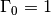

skrf.media.freespace.Freespace.open¶
- Freespace.open(nports=1, **kwargs)¶
Open ()
Parameters : nports : int
number of ports
**kwargs : key word arguments
passed to match(), which is called initially to create a ‘blank’ network.
Returns : match : Network object
a n-port open circuit
See also
- match
- function called to create a ‘blank’ network

Previous topic
skrf.media.freespace.Freespace.match
Next topic
skrf.media.freespace.Freespace.resistor